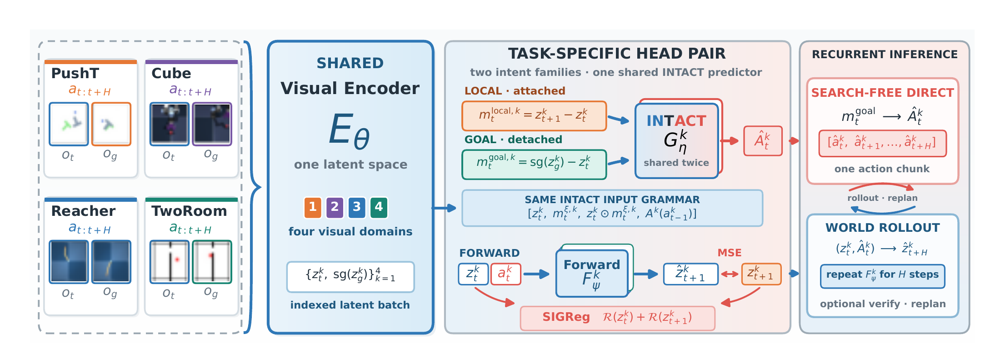
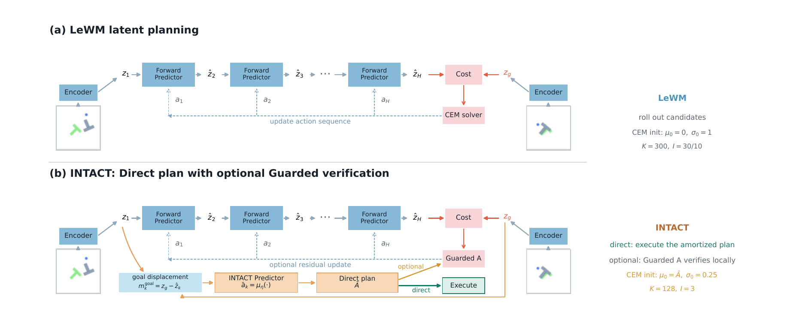

INTACT：世界模型怎样从“会预测”变成“会选动作”
原论文：Isomorphic Intent-to-Action Learning for Search-Free World Models
Junhan Sun · Hao Zhao · Guofeng Zhang · arXiv:2607.26056v1 · 2026
§01 先别管标题：这篇论文只想解决一个问题
1. 机器人看到“现在的画面”和“目标画面”，需要决定下一步动作。
2. 旧的 LeWorldModel 会预测“某个动作做完会怎样”，却不会直接告诉机器人“应该做哪个动作”，所以要试很多候选动作。
3. INTACT 新增了一条捷径：直接学习“我想让画面这样变化 → 应该执行什么动作”。
LeWM 是后果预测器；INTACT 在它旁边训练了一个动作选择器。动作选择器给出答案，原来的世界模型负责预测后果、必要时检查答案。
展开原文 · 作者怎样描述这个缺口
“The world model learns what an action will do, but not which action should realize a requested latent change.”
用 TwoRoom 任务想一遍
红点现在在左边房间，目标画面显示它应该去右边房间。真正的问题不是“向右走会发生什么”，而是“为了到达目标，现在先往哪个方向走？”
| 输入 | 当前图像 + 目标图像 |
| LeWM 的做法 | “我先试一堆动作，看哪一条模拟结果最像目标。” |
| INTACT 的做法 | “训练时我已经见过‘状态变化和动作’的配对，现在直接读出动作。” |
| 世界模型还要吗 | 要。它仍负责预测动作后果，可以检查 Direct 动作，也可以在执行后重新规划。 |
所以作者说的 “True WAM” 是什么意思？
这不是学界统一术语，而是作者在演讲里的强调方式。他认为一个完整的 World–Action Model 最好同时有两种能力：预测动作后果，以及根据目标直接选动作。
| 普通 VLA | 看到图像和指令后直接输出动作；未必有一个明确的模块预测动作后果。 |
| Forward-only 世界模型 | 知道“做动作 A 会发生什么”，但面对目标时仍要搜索“到底应该做哪个动作”。 |
| INTACT 所谓 True WAM | 既保留“动作 → 后果”，又学会“目标变化 → 动作”；两种训练共同塑造视觉表示。 |
INTACT 并没有把两个模块合成一个网络。Forward Predictor 负责预测未来，INTACT Predictor 负责选动作。它们共享视觉编码结果，并在同一次训练中共同更新视觉编码器。
它到底从一条示范轨迹里学到了什么？
假设示范里记录了：机器人处于画面 A，执行动作“向右”，下一刻到达 B，之后最终到达目标 C。INTACT 会从同一条记录造出两个训练问题。
第一问很真实，但机器人行动前还看不到下一帧 B；第二问部署时可用，但目标 C 不是“一步之后”的真实画面。让同一个模块同时学习两问，就把真实的一步运动和部署时的目标请求连接起来了。
进阶可选 · 两个 intent 的公式到底在说什么
Local intent：$m_t^{local}=z_{t+1}-z_t$。白话：真实下一帧 B 相比当前帧 A 变了多少。
Goal intent：$m_t^{goal}=\mathrm{sg}(z_g)-z_t$。白话：未来目标 C 相比当前帧 A 还差多少。
论文说的 isomorphic，首先只是指两种问题使用相同输入格式、同一个动作模块、同一种动作输出；不是说两个差值必须数值相等。
论文五问 · 白话版
| 为什么要做 | 旧世界模型会预测后果，但每次控制都要重新搜索动作，慢，而且浪费离线示范中已有的动作监督。 |
| 基于什么 | 直接建立在 LeWorldModel 上：沿用它的视觉编码器和前向世界预测器，再增加一个目标到动作的模块。 |
| 旧方法缺什么 | 缺少一个部署时能直接调用的“当前状态 + 目标状态 → 动作”接口。 |
| 核心发现 | 每条离线示范已经同时告诉我们“画面怎样变化”和“哪个动作造成了变化”，这些标签可以直接训练目标到动作的接口。 |
| 效果怎样 | 四任务 Direct 平均成功率 95.33%，推理 2.9–5.5 ms；可选的小规模检查把结果提升到 96.86%。 |
现在再看 Figure 1：只找六个东西

1 · 拿出一条旧示范
示范里有连续图像和机器人当时执行的动作，没有额外 reward 或语言标注。
2 · 把图像翻译成数字
当前图像、下一图像和未来目标都经过同一个视觉编码器。
3 · 从示范生成两道问题
一道问真实下一步，一道问未来目标；正确答案都是示范中当时执行的动作。
4 · 同一个动作选择器同时练两题
它因此既懂真实的一步变化，也懂部署时给出的目标请求。
5 · 同时保留后果预测
另一条分支继续学习动作后的未来状态，所以系统不是单纯行为克隆。
6 · 部署时只问目标问题
给当前画面和目标画面，动作选择器直接输出下一段动作；执行后再看真实画面继续循环。
Figure 2：Search-free 不等于 Rollout-free
上一张图说明两个 Predictor 怎样一起训练，但还没回答“真正控制机器人时怎么跑”。这张图只比较推理时动作计划从哪里来：LeWM 必须盲搜很多候选；INTACT 先直接提出一条计划，再决定要不要局部检查。
Search-free 不是不使用 Forward Predictor，也不是完全不 rollout。Direct 仍用 $F_\psi$ 推演自己提出的那一条计划；它省掉的是“采样几百条候选、逐条比较、反复更新”的搜索过程。

1 · LeWM 先猜许多动作序列
每条候选都交给 $F_\psi$，从真实当前 latent 开始推演出一个预测终点。
2 · Cost 告诉 CEM 哪些猜测比较好
CEM 根据终点离 $z_g$ 的距离更新动作分布，并重复采样与 rollout；所以它离不开搜索。
3 · INTACT 直接读取目标差值
先算 $m_k^{goal}=z_g-\tilde z_k$，把“从这里到目标还差多少”作为动作条件。
4 · $G_\eta$ 输出动作
Direct 取动作分布均值 $\bar a_k$；它是从示范中学出的动作预测，不是 CEM 的随机候选。
5 · $F_\psi$ 推进这一条轨迹
用 $\bar a_k$ 预测 $\tilde z_{k+1}$，重新计算目标差，再让 $G_\eta$ 给下一段动作，最终组成 $\bar A$。
6 · Direct 直接执行
绿色路径绕过 Cost 和 CEM。执行第一个动作块后读取新的真实图像，再闭环重规划。
7 · Guarded A 只是可选检查
它以 $\bar A$ 为中心做 128×3 的局部 CEM；传统 LeWM 从零开始做 300×30/10 的大范围搜索。
| LeWM | 随机候选 → 多条 rollout → Cost → CEM 更新；搜索是必须的。 |
| INTACT Direct | $G_\eta$ 给动作，$F_\psi$ 沿唯一计划推进；0 候选、0 次终点 Cost。 |
| INTACT Guarded A | 在 Direct 计划附近采样少量候选，再用 rollout 与 Cost 做局部验证。 |
展开原文 · 作者怎样区分 Direct 与局部验证
“INTACT converts mandatory search into optional verification.”
数据和结果：只先记三个数字
展开四个数据集的规模、采集方式和用途
| PushT | 20,000 条 expert episodes，平均 196 steps；二维连续推挤任务。 |
| Cube | 10,000 条 episodes，每条 200 steps；benchmark heuristic 控制机械臂移动立方体。 |
| Reacher | 10,000 条 episodes，每条 200 steps；由 SAC policy 采集双关节机械臂运动。 |
| TwoRoom | 10,000 条 episodes，平均 92 steps；noisy heuristic 先走向门，再走向目标。 |
| 模型输入 | RGB 观测与五步 action block；模拟器 state 只用于 probe 和成功判定，不输入主模型。 |
| 评测 | 通常使用 3 个 evaluation seeds，每个 seed 100 episodes；Official 与 CLEAR Moderate 分开报告。 |
实验只有四个模拟环境和固定图像目标，没有真机、分布外目标、跨机器人本体实验。它证明的是这种训练接口在当前 benchmark 上有效，不是“机器人已经拥有通用世界理解”。
后续章节会继续保持这个难度
这一版先把主线讲通。后续不会直接扔出术语，而是先用 A→B→C 的例子，再分别解释为什么两种训练问题能共用模块、三项 loss 各做什么、Direct 与搜索怎样配合。